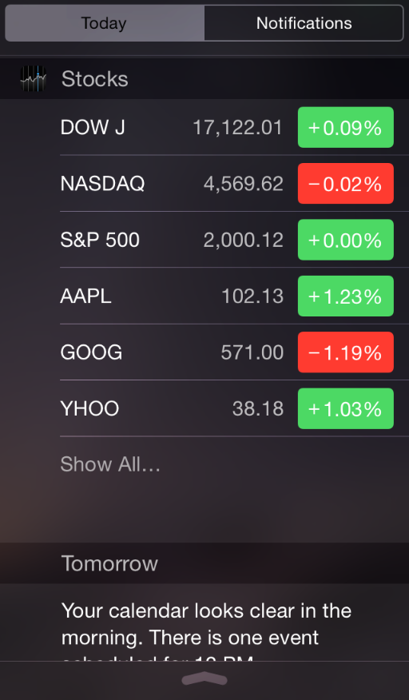
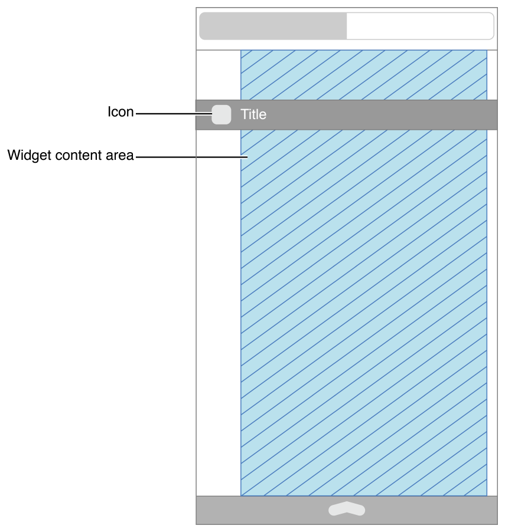
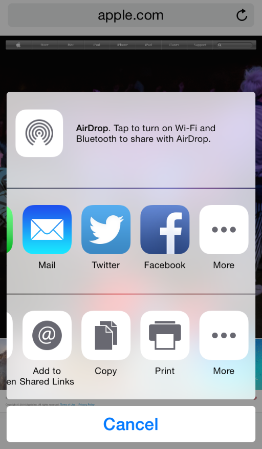
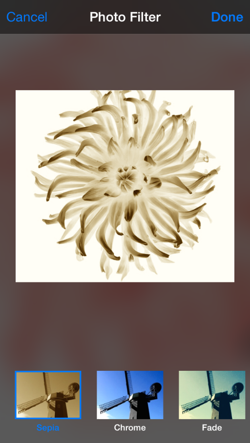
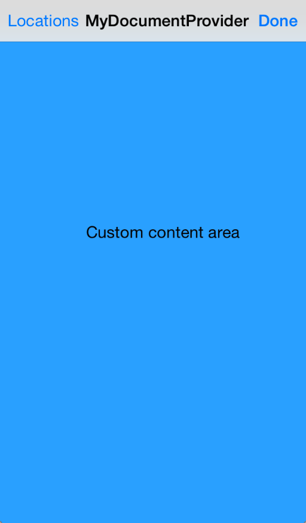
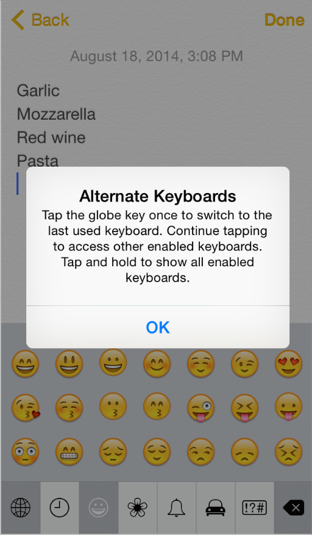

App Extensions
App extensions increase the reach of your app, giving users access to focused parts of its functionality while they use other apps. For example, while viewing websites in Safari, people can use your Share extension to post an image or an article to your social website. Or while using Photos, people might use your Photo Editing extension to apply a filter to a photo. (In these scenarios, Safari and Photos are called host apps because they give users access to extensions.)
You deliver an app extension inside a fully functional iOS app that you submit to the App Store (an app that contains extensions is called a containing app). After enabling the extension in your containing app, people can use it to perform a quick task while they’re using other apps. For example, while reading about a product in an email message, people might use your Action extension to add the product to a shopping list without having to leave Mail.
Table 17-1 lists the types of iOS app extensions you can create.
App extension type |
People use the extension to… |
|---|---|
Today widget |
Get a quick update or perform a quick task in the Today view of Notification Center |
Share |
Post to a website or share content with others |
Action |
Manipulate or view content within the context of another app |
Photo Editing |
Edit a photo or video within the Photos app |
Document Provider |
Access and manage a repository of files |
Custom keyboard |
Replace the iOS system keyboard with a custom keyboard |
The following guidelines apply to app extensions of all types; for guidance that’s specific to a particular type of app extension, see the sections below. (To learn how to develop, debug, and distribute an extension, see App Extension Programming Guide.)
Enable a single task. An app extension is not a mini version of your app. Instead, an extension performs a narrowly scoped task in the context of the user’s larger goal. For example, an Action extension might give users a different way to view their current content.
Keep user interactions limited and streamlined. The best app extensions let people perform the task in just a few taps so that they can return to their earlier context as soon as possible. For example, a Share extension might let people post an image with a single tap.
Incorporate the name of your containing app into the name of each extension it provides. Although multiple extensions in one containing app should each have a unique name, you want to make sure that users understand the relationship between your extensions and your app. People encounter extensions in many different contexts, and they’re unlikely to trust an extension if they don’t recognize it.
In most cases, use the icon of the containing app. Displaying a familiar icon is another way an extension can gain users’s trust. Note that in the case of an Action extension, you create a monochromatic version of the containing app’s icon (for details, see Share and Action Extensions).
Avoid displaying a modal view on top of an extension. Many extensions are displayed within a modal view by default, and it’s best to avoid layering modal views. Although there are cases where users might see an alert on top of an extension, avoid designing an extension workflow that requires a modal view.
Today Widgets
People view Today widgets in the Today area of Notification Center. Because people configure the Today area so that it displays the information they value most, it works well to approach the design of your widget with the goal of earning a place among the user’s most important items.

Design an appearance that looks at home in Notification Center. When you use the default margins and background appearance provided by Notification Center, your Today widget gives users a consistent experience. For best results, focus on drawing your content and not on drawing backgrounds or other materials. In particular, avoid drawing a solid background.
Align content with the widget’s title. When your widget content aligns with your title, people can easily scan the Today view for the widget they want. Respect the margins in the Today view, and restrain your content to the widget content area shown here.

In general, use the system font in white to display text. White text looks good on the default Notification Center background. For secondary text, use the system-provided vibrant appearance (to learn more about this appearance, see notificationCenterVibrancyEffect).
Provide a Notification Center experience. People visit Notification Center to get brief updates or to perform a very simple task, so it’s best when your Today widget displays the right amount of information and limits interactivity. Specifically:
Avoid making users scroll or vertically shift the view to see all the information in your Today widget. A widget can expand vertically to show more information, but it’s not a good experience when a widget’s height exceeds the height of Notification Center, because it interferes with scrolling to see other Today widgets.
Avoid enabling horizontal swiping or dragging, because it interferes with navigation between Notification Center areas.
As much as possible, let users perform a task or open your app with a single tap (note that the keyboard is not available within a Today widget).
Optimize performance so that people get useful information immediately. It's a good idea to cache information locally so that you can display recent information while you get updates. People expect to spend very little time in the Today view, and iOS may terminate Today widgets that don’t use memory wisely.
If appropriate, let people tap your Today widget to open your app. Because your Today widget provides a narrowly focused experience, it can work well to direct people to your app for more information or functionality. It’s not a good idea to provide an “Open App” button, so one solution is to make your entire Today widget tappable. Or you might let users tap an appropriate UI object within the widget so that it opens your app to a view that’s focused on that object. For example, the Calendar widget shows today’s events; if users want to get more information about an event, they can tap the event in the widget to view it in the Calendar app.
Share and Action Extensions
People access Share and Action extensions by tapping the Action button in an app. In the activity view controller displayed by the Action button, Action extensions are listed in the bottom row and Share extensions are listed above them. People can use the More buttons to manage the Share and Action extensions that are displayed in the activity view controller shown here.

A Share or Action extension typically takes as input the content in the user’s current context. While reading an article in Safari, for example, a user might tap the Action button and use a Share extension to post the article to a sharing website or use an Action extension to view a translation of the article.
As much as possible, use the system-provided UI in a Share extension. The system-provided compose view controller gives users a consistent experience and automatically supports common tasks, such as previewing and validating standard items, synchronizing content and view animation, and configuring a post. To learn more about using the system-provided compose view controller, see Share in App Extension Programming Guide.
Consider displaying the progress of a lengthy upload in a Share extension’s containing app. People expect to return to their previous context immediately after tapping an extension’s Post or Share button, even when the shared content is large. You need to make progress updates available, but people don’t want to get a notification every time an upload completes, and there’s no way to programmatically relaunch an extension. In this scenario, it can work well to display the progress of the upload in the containing app, which can handle the task in the background and send a notification if there’s a problem.
Use a monochromatic version of the app icon for an Action extension. (In contrast, a Share extension uses its containing app’s full-color app icon.) To create an icon for an Action extension, you might start by creating a stencil version of your app icon. If necessary, simplify the design by focusing on the elements that make your icon unique.
If you provide multiple Action extensions in your containing app, it can work well to create a family of icons for them. Be sure to make every icon in the family look related to the containing app’s icon.
Photo Editing Extensions
People can use Photo Editing extensions while they view photos or videos in the Photos app. Typically, a Photo Editing extension helps a user apply a filter or make some other edit to a photo or video. After the user confirms the change, the edited content is available in Photos.
Photos provides a modal view that displays the custom UI of your Photo Editing extension. Photos can also display a confirmation view when the user chooses Cancel after applying edits to a photo or video (you’re responsible for enabling this behavior in code).
Avoid using a navigation bar in your Photo Editing extension. As you can see here, the modal view that encloses your extension’s view already includes a navigation bar; adding another navigation bar would take space away from your UI and be confusing to users. (By default, Photos displays your view at full-screen height, so your content will appear underneath the built-in navigation bar.)

If appropriate, let users preview their edits. As much as possible, you want to let users see the results of their work before they close your extension and return to Photos.
Document Provider Extensions
A Document Provider extension helps people access the documents that your app manages from a wide range of other apps. In a host app, a document picker view controller displays the UI that your extension provides (to learn more about the document picker view controller, see UIDocumentPickerViewController Class Reference).
Avoid using a navigation bar in your Document Provider extension. iOS displays your extension’s custom UI within the navigation bar–based interface of the document picker view controller. Displaying a second navigation bar below the built-in bar is confusing to users and takes space away from your content. (By default, the document picker view controller displays your view at full-screen height, so your content appears underneath the built-in navigation bar.)

Custom Keyboards
People use a keyboard extension to replace the iOS keyboard with a custom keyboard throughout the system. After enabling a keyboard extension, people get the custom keyboard when they enter any text entry area except for secure text entry areas (such as a password field) and phone pad areas (such as a phone number field in Contacts).
Provide an obvious way for users to switch to the next keyboard. People are very familiar with the iOS globe key, and they expect a similar experience in your keyboard.

Case Study: From Desktop to iOS
Copyright © 2014 Apple Inc. All rights reserved. Terms of Use | Privacy Policy | Updated: 2014-09-17